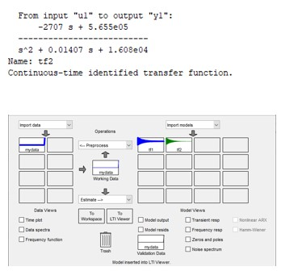

OS for Self-balancing Motorcycle
This is a comprehensive study for all aspects of the design of a two-wheel self-balanced vehicle based on gyroscopic effect as a graduation project for my senior year in Mechatronics and Automation department at Faculty of Engineering - Ain Shams University.
This project aims to have a new type of vehicle, a single seat vehicle. Designed to be the bridge between cars and motorcycle, designed to satisfy the need of the daily commuter & meet to the market demand and environment essential need for reducing the contamination so that vehicle is going to be fully electrically powered which would help in cleaner environment and would result also in a cost-effective product compared to its fuel versions.The balancing system is based on the concept of applying a single gimbal control moment gyroscope (SGCMG). It’s important to understand how gyroscope works and how to get the best use of it.

Single Gimbal Control Moment Gyroscope (SGCMG) is a kind of momentum exchange actuator .Thanks to its powerful momentum storage capacity and torque amplification ability over Reaction Wheel (RW), we can use it to generate a torque foe our balancing purpose against any unexpected and unwanted inclination in our vehicle.
Self-balancing Mechanism Architecture:
Architecture Explanation:
1.Gyroscope BLDC Motors are responsible for accelerating gimbal to a certain velocity up tp 3000 r.p.m.
2.Gyroscope ESCs are responsible for controlling the BLDC motors.
3.Gyroscope Encoders are responsible for measuring the BLDC motor speed.
4.Gyroscope DC Motors are responsible for rotating the gimbal to a certain angle to counter the disturbance.
5.Gyroscope DC Controllers are responsible for controlling the DC motors.
6.Rotary Potentiometers are responsible for reading the gimbal angle.
7.IMU is responsible for reading the inclination angle.
8.Gyroscope controller is tiva c (ARM Cortex-M4F based) used freeRTOS to handle different tasks.
9.Fuse box to protect different electrical elements from over current.
Two parameters to be controlled:
1.Gimbal Speed (must be fixed at certain point respect to the load)
2.Gimbal Angle (gimbal must be rotated with certain angle to counter the disturbance)
Applying System Identification:
Constructing mathematical models of dynamic systems using measurements of the input and output signals of the system.
Input is Ramp signal

Output is the motor speed signal (need further processing and filtration)
Getting the transfer function (using matlab system identification toolbox)
